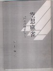
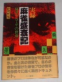
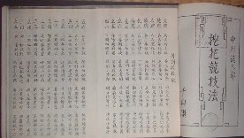
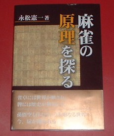

大正中期から今日まで刊行された中から、σ(_
_)の独断と偏見だけで、ユニークな書籍を選んでみた。
|
|
書名 |
一口コメント |
著者 |
出版社 |
刊行日 |
| 1 |
謎ジパング |
「昔は白發中のほかに黒という牌があった。とうぜん大三元ではなく大四元だった」という珍説が・・・・
|
明石山人 |
講談社 |
H8.1.30 |
| . |
| 2 |
空想麻雀 |
情熱とは、かくのごとし。 |
井上尚行 |
自費 |
H5.5.5 |
|  |
| . |
| 3 |
コンピュータが教える麻雀の勝ち方 |
コンピュータで麻雀が勝てるわけではないが・・・・ま、それはそれとして。
|
石田滋 |
大泉書店 |
S59.7.10 |
| . |
| 4 |
麻雀の遊び方 |
昭和初期の有名な推理小説家である海野十三が書いた入門書。ペンネーム「うんのじゅうさ」は、「(麻雀は)運が十さ」のもじり。
|
海野十三 |
博文館 |
S5.8.25 |
| . |
| 5 |
実録・麻雀盛衰記 |
面白おかしくも悲しい、麻雀界暴露話し・・・・
|
岡田一裕 |
三一書房 |
S61.1.31 |
|  |
| . |
| 6 |
麻雀通 |
これを読むと、あなたも麻雀通、という類の本ではない。
|
川崎備寛 |
四六書院 |
S5.9.1 |
 |
| . |
| 7 |
麻雀牌占い |
運勢がいいか悪いか、占ってから行こう....
|
北浦無象庵 |
上海公司 |
S28 |
| . |
| 8 |
控花競技法 |
控花（わほわ）は、麻雀と似たような中国ゲーム。サブタイトルに「麻雀以上に面白い」とあるが、日本では普及しなかった。
|
中村徳三郎 |
千山閣 |
S06 |
|  |
| . |
| 9 |
麻雀の原理を探る |
|
永松憲一 |
星雲社 |
H13.9.26 |
|  |